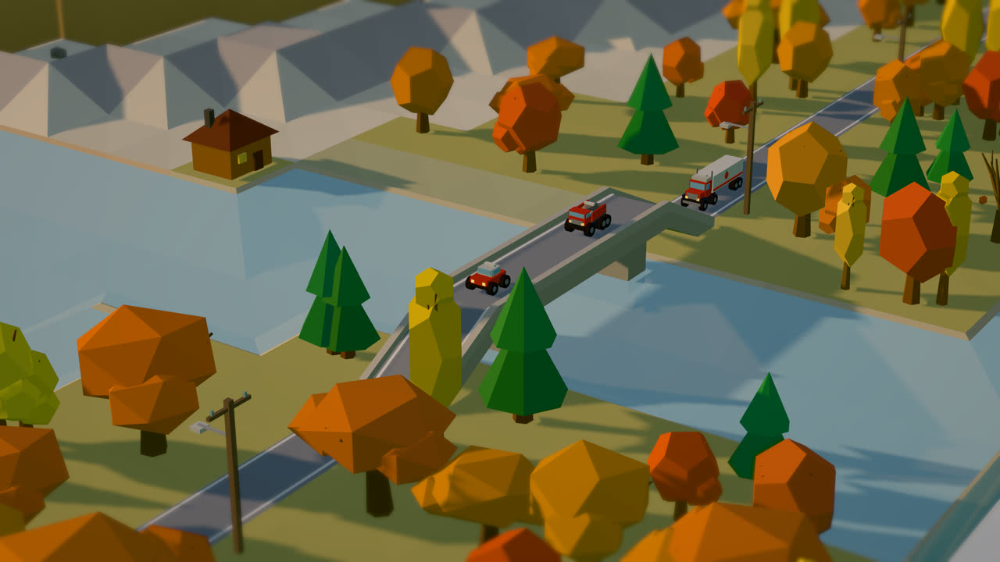
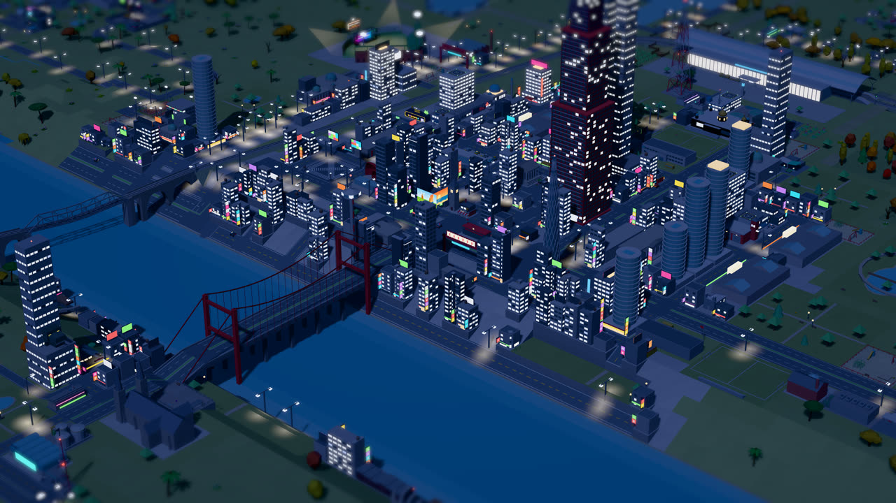
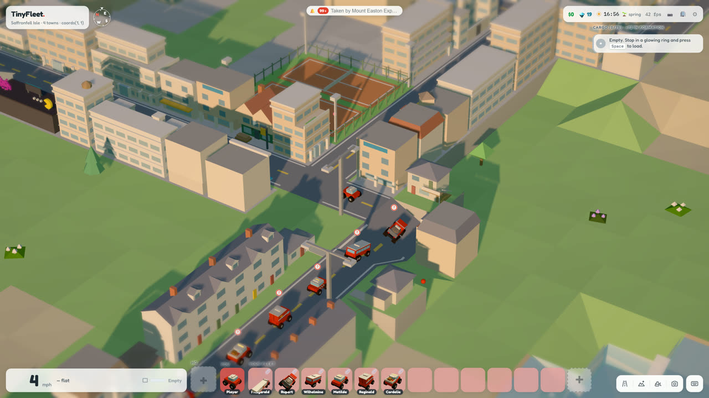
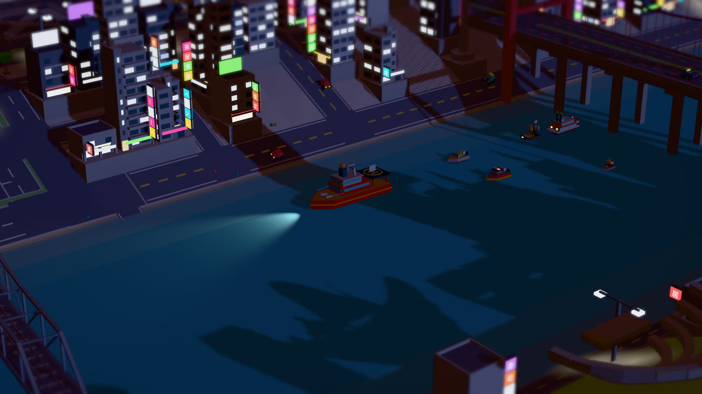
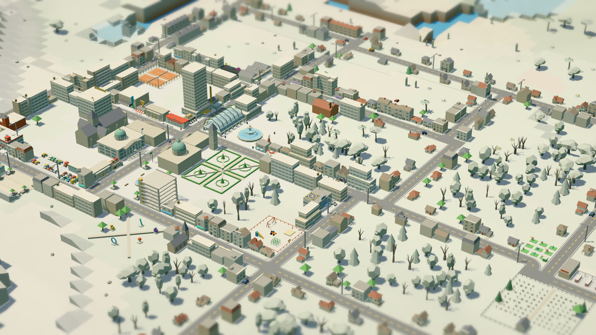
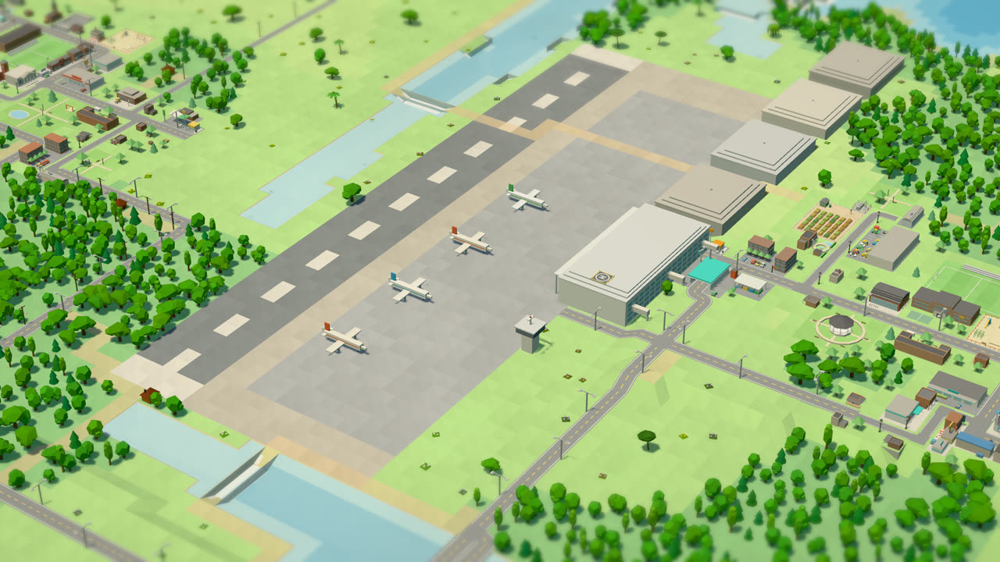

The same game in its own window, for when you’d rather not play in a browser tab. You don’t need it to play: play now in your browser.
Windows 10 and 11
Download for WindowsmacOS, Apple silicon and Intel
Download for MacTinyFleet is a free online driving and logistics game. You start with one small car and a parcel to deliver. Before long you are hauling freight between towns, hiring drivers, buying trucks, trains, boats and planes, and running a transport company from your own headquarters.
It plays in a browser tab with nothing to download, in one shared world that every player drives through: a procedurally generated map of islands and continents, with towns built in dozens of styles, all drawn as a low-poly, tilt-shift miniature. Build roads and bridges, lay railway track, win territory from rival firms, and play alongside friends or in a fleet you share with them.






TinyFleet is a free online driving and logistics game. You start with one small car, deliver cargo and passengers between towns, and grow a transport company: you hire drivers, buy trucks, buses, trains, boats, helicopters and planes, and move up to a bigger headquarters. It all happens in one shared, procedurally generated world drawn in a low-poly, tilt-shift miniature style.
Yes. TinyFleet is free to play in your browser, and the Windows and Mac apps are free downloads.
No. Press Play Now and the game runs in your browser tab. There are optional Windows and Mac apps for anyone who would rather have it in its own window.
Yes. Everyone plays in the same persistent online world. You will see other players’ fleets on the roads, you can add friends, and you can invite people into a shared fleet with a link and run one company together.
You pick a fleet name and a PIN, and that is it. Your career is kept on the server, so you can sign in from any computer.
Cars, vans, trucks, buses, tow trucks, trains, ferries, yachts, helicopters, biplanes, jets and a submarine, among others. Each kind of vehicle opens up its own kinds of work, from parcel rounds and passenger runs to freight trains and night helicopter jobs.
A desktop or laptop with a keyboard and a current browser such as Chrome, Edge, Firefox or Safari, with graphics acceleration turned on. It is not made for phones.
It sits between a driving game and a transport tycoon. If you like the delivery runs of Euro Truck Simulator, the company building of Transport Tycoon and OpenTTD, or the miniature look of Mini Motorways, you will find something of each here, in a browser and with other players.